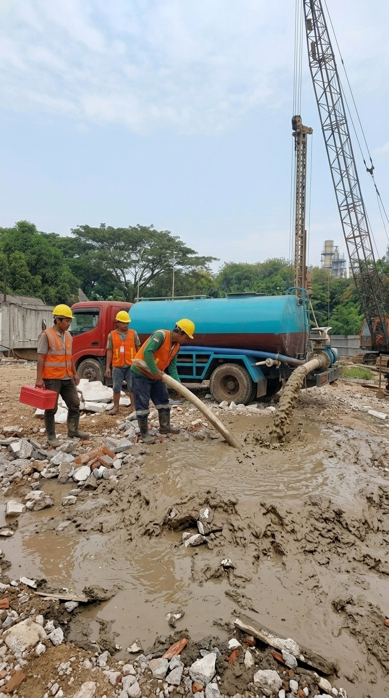

NIKI SEKAWAN PONDASI menyediakan jasa sedot lumpur untuk mendukung pekerjaan Bore Pile dan Wash Boring agar proses pekerjaan di lapangan lebih efektif dan terkendali.

Layanan Sedot Lumpur Bore Pile merupakan pekerjaan pendukung yang digunakan untuk membantu mengatasi lumpur yang terbentuk selama proses pekerjaan pondasi berlangsung.
Armada sedot lumpur dapat digunakan untuk membantu proses pembersihan dan pengangkutan lumpur, khususnya pada pekerjaan Bore Pile dengan metode Wash Boring.
Dengan dukungan sistem vacuum dan kapasitas tangki yang memadai, proses penyedotan dapat dilakukan secara lebih efektif sehingga kondisi area kerja tetap lebih terkendali.
Layanan jasa sedot lumpur Bore Pile ini dapat membantu memperlancar pekerjaan konstruksi dan mendukung kebutuhan pengelolaan lumpur di lokasi proyek.
Konsultasikan ProyekArmada dirancang untuk membantu kebutuhan penyedotan lumpur pada pekerjaan Bore Pile dan Wash Boring di lokasi proyek.
Membutuhkan layanan Sedot Lumpur untuk pekerjaan Bore Pile atau Wash Boring? Konsultasikan kebutuhan proyek Anda bersama NIKI SEKAWAN.
Hubungi Kami